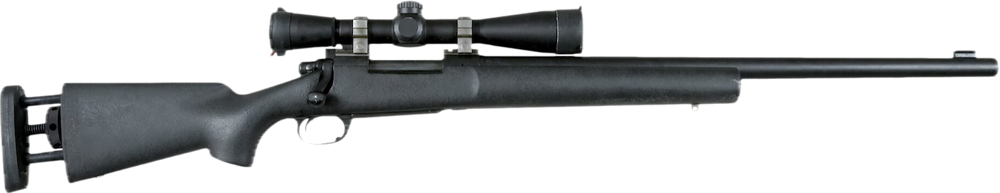

Bolt Rifle Shooting
The bolt-action rifle is the precision and hunting tool: one round at a time, a fixed barrel and action, and usually a magnified optic. This page covers how the action works, cartridges, mounting and setting up a scope, positions with bipod, bag, and sling, running the bolt without breaking position, zeroing and keeping data, the ballistic calculator, wind at distance, and maintenance.

Built on U.S. Army TC 3-22.10 Sniper, TC 3-22.9 Rifle and Carbine, and common precision-rifle practice. Torque values and load data are typical figures; your rifle's manufacturer and your own chronograph come first. Right-handed shooter assumed. The fundamentals that every rifle shares (natural point of aim, trigger, MOA and mils) are covered in more depth on the Rifle page.
01Safety
The four rules
- Treat every firearm as if it's loaded.
- Never point the muzzle at anything you aren't willing to destroy.
- Keep your finger off the trigger until your sights are on the target and you've decided to fire.
- Be sure of your target and what's beyond it.
Bolt-rifle specific
- Full-power rifle cartridges travel 3 to 4 miles. Every shot needs a backstop you can see, and a scope narrows what you see around the target.
- The safety blocks the trigger or firing pin, not the shooter. Some older triggers have fired when the safety was moved to "fire" with no finger on the trigger, so keep the muzzle in a safe direction whenever you touch it.
- On a three-position safety, the middle position lets you cycle rounds out with the safety on. Learn which position your rifle uses for unloading.
- Clear a bolt gun by opening the bolt, removing the magazine or emptying the internal magazine through the floorplate, and checking the chamber by eye and finger. Leave the bolt open, or remove it, on the line.
- Never use a scope as a pair of binoculars on anything you wouldn't shoot.
See On the range on the Rifle page for range commands and clearing the gun before you step off the line.
02The action
Lifting the bolt handle rotates the bolt, unlocking its lugs from recesses behind the chamber. On most modern actions the same lift cocks the firing pin ("cock on open"). Pulling the bolt back extracts and ejects the fired case; pushing it forward strips the next round from the magazine and chambers it, and turning the handle down locks it.
| Feature | Options | What it means for you |
|---|---|---|
| Feeding | Push feed (Remington 700, Savage, Tikka) or controlled-round feed (Mauser 98, Winchester Model 70 Classic) | With controlled feed, the extractor grips the case rim as soon as it leaves the magazine, so a round can't double-feed if you short-stroke the bolt. Push feed is simpler and usually more accurate out of the box. |
| Magazine | Blind internal, hinged floorplate, or detachable box | Detachable boxes are faster to reload and unload. Internal magazines are topped off from the top, one round at a time, or emptied through the floorplate. |
| Safety | Two-position, three-position (Model 70, many customs), or tang-mounted | Know whether "safe" also locks the bolt closed. Three-position safeties add a middle setting that locks the trigger but lets you unload. |
| Trigger | Fixed or user-adjustable; single-stage or two-stage | A clean 2.5–4 lb break suits most field and precision shooting. Adjust only within the manufacturer's range. |
| Length | Short action (.308 family, 6.5 Creedmoor) or long action (.30-06, .300 Win Mag) | Long actions need a longer bolt throw. The cartridge, not preference, decides which one you need. |
03Cartridges
| Cartridge | Typical bullets | Velocity | Recoil | Common use |
|---|---|---|---|---|
| .223 Rem / 5.56 | 55–77 gr | 2,750–3,200 ft/s | Very light | Training, varmint, low-cost practice to 600 yd |
| 6.5 Creedmoor | 120–147 gr | 2,650–2,900 ft/s | Light | Precision competition, deer-size game, long-range practice |
| .308 Win / 7.62 NATO | 150–178 gr | 2,550–2,850 ft/s | Moderate | General purpose, law-enforcement and military marksman rifles, deer and elk |
| .30-06 Springfield | 150–180 gr | 2,700–2,900 ft/s | Moderate | All North American game; ammunition is everywhere |
| .300 Win Mag | 180–215 gr | 2,850–2,960 ft/s | Heavy | Long range, elk and larger game; shorter barrel life |
Recoil matters more than most people admit. A cartridge you can shoot without flinching, and afford to practice with, will put more rounds where you want them than a bigger one you dread. For learning the fundamentals, a .223 or 6.5 Creedmoor bolt gun teaches more per dollar than a magnum.
04Scope setup
Mounting
- Degrease the base and ring screws. Torque base screws and ring screws to the manufacturer's numbers, commonly 15–25 in-lb for ring caps and higher for base screws. Tighten ring caps evenly in a cross pattern so the gaps on each side match.
- A canted (20 or 30 MOA) base gives you more elevation travel for long range.
- Use the lowest rings that let the objective clear the barrel. A lower scope is easier to get a consistent cheek weld behind.
Eye relief, level, and parallax
- Eye relief: in your shooting position with the scope at highest power, slide the scope until the full picture appears with no dark ring, then tighten the rings.
- Level: level the rifle first, then the reticle to it. A canted reticle moves impacts sideways at distance. A bubble level on the scope tube shows cant while you shoot.
- Parallax: adjust the side focus until the reticle doesn't move against the target when you shift your head slightly. Then the reticle and target are in the same focal plane.
| Choice | Options | Notes |
|---|---|---|
| Focal plane | First focal plane (FFP) or second (SFP) | In FFP the reticle grows with magnification, so hash marks are correct at every power. In SFP they're correct at one power only, usually maximum. |
| Units | Mil or MOA | Match the turrets to the reticle: mil/mil or MOA/MOA. Mixed units force conversions under pressure. |
| Magnification | 3–9×, 4–16×, 5–25× | Most field shooting happens at 6–12×. More magnification shows more wobble and less of the surrounding area. |
05Positions and support
Accuracy comes from the position more than the rifle. The rifle should rest on support and bone, not on muscle, and point at the target naturally (natural point of aim) before you touch the trigger.
Prone with bipod
Body slightly offset behind the rifle, firing-side knee drawn up a little to lift the chest off the ground. Load the bipod: lean gently forward into it so the legs are preloaded. Recoil then comes straight back and the rifle tracks the same way every shot.
Rear bag
The support hand squeezes a rear bag under the toe of the stock. Squeezing raises the muzzle and relaxing lowers it, so you can fine-tune elevation without muscling the rifle.
Sling
A loop sling on the support arm turns the arm into a tensioned strut for prone and sitting. A hasty sling wrapped around the forearm is faster and still tightens the position. Neither takes extra gear.
Field supports
A pack, a fence rail, a tree, or a tripod. Pad hard surfaces with a glove or bag, and never rest the barrel itself on anything, because contact shifts the point of impact.
06Running the bolt
- Keep your cheek on the stock and your eye behind the scope. Only the firing hand moves.
- Lift, pull straight back hard to the stop, push forward hard, and turn down, in one motion. A firm, full stroke ejects and feeds reliably; a timid one causes most bolt-gun malfunctions.
- Return the hand to the grip, finger straight, and reacquire the reticle before deciding on the next shot.
- Watch the impact or the trace while you cycle. A shooter who stays in the scope sees their own miss and can correct.
Short-stroking and other stoppages
- Short-stroke: the bolt wasn't pulled far enough to pick up the next round, or (with push feed) wasn't pulled back far enough to eject before a new round fed. Open fully, clear the case or round, and feed again.
- Failure to extract: a stuck case usually means a pressure sign or a dirty chamber. Stop shooting that ammunition and look at the case head and primer.
- Hard bolt lift on a fired case: often a sign of high pressure. Stop, check the load and the chamber, and don't keep firing to "see what happens."
07The shot process
Each shot follows the same order: position and natural point of aim, sight picture, a breath held at the natural pause, smooth trigger press straight to the rear, and follow-through. Hold the trigger to the rear and keep your eye in the scope until the rifle settles, then call the shot: say where the reticle was when it broke before you look at the target. Called shots that match impacts mean your fundamentals are working; called shots that don't mean the rifle, ammunition, or data needs attention.
08Zeroing and data
Zero
- Bore-sight at 25 yd, or look through the bore with the bolt removed and center the target, then adjust the reticle to match.
- At 100 yd, fire a three- or five-shot group from a solid prone position.
- Measure from the group center to the aim point and dial the correction (1 MOA ≈ 1.047 in at 100 yd; 0.1 mil = 0.36 in at 100 yd).
- Confirm with another group, then set the turret's zero stop.
Data (DOPE)
- Record every string: date, temperature, altitude, distance, elevation and wind dialed, and where the rounds hit.
- Chronograph your ammunition. Velocity printed on the box is from a test barrel and often runs high.
- Shoot at real distances and correct (true) the calculator's velocity or BC to match actual drops.
- Track the cold-bore shot separately. The first shot from a clean, cold barrel can land away from the rest of the group.
09Ballistic calculator
Pick a cartridge and load, or enter your own chronographed velocity and the bullet's published G1 ballistic coefficient. Sight height for a scoped bolt gun is usually 1.5–2.0 inches (bore center to scope center). Set "Hold at" for the exact elevation and wind correction at a given distance.
10Wind and distance
Past about 300 yards, wind usually causes more misses than elevation. Read it at the target, midway, and at your position: flags, grass, dust, and mirage (the heat shimmer you see through a scope focused just short of the target) all show direction and rough speed. Wind closest to you deflects the bullet most, because it acts on the bullet over the rest of its flight.
| Effect | What it does | When it matters |
|---|---|---|
| Crosswind | Full value at 3 and 9 o'clock, about half at 1, 5, 7, and 11 | Every distance; dominates past 300 yd |
| Spin drift | The spinning bullet drifts toward the direction of twist (right with right-hand twist) | Past about 600 yd, a few inches to a foot or more |
| Angle | Shooting steeply up or down, the bullet drops as if the target were closer: hold for the horizontal distance | Mountains, rooftops, steep valleys |
| Density altitude | Thinner, warmer air means less drag and less drop | Long range and large changes in altitude or temperature |
11Maintenance
- Clean from the breech with a bore guide and a one-piece coated rod so the crown and throat aren't damaged. Clean the chamber and lug recesses, which brushes miss.
- Check the action screws and scope mounts before each trip. Torque action screws to the stock maker's specification; loose action screws move zero.
- Note the round count. Barrels wear fastest at the throat; accuracy often declines after a few thousand rounds in hot cartridges such as the .300 Win Mag and 6.5 Creedmoor.
- Keep a light film of oil on the bolt lugs and cocking cam, and a dry bore before you shoot. Store in a dry place with the bolt open or removed.
12Drills and standards
| Drill | Setup | Standard | Builds |
|---|---|---|---|
| Cold bore | First shot of the day at 100 yd on a 1-inch dot, before any warm-up | Inside 1 MOA of your zero; log it every time | A known first-shot point of impact |
| 5-shot group | Prone, bipod and rear bag, 100 yd | Under 1 MOA with match ammunition | Fundamentals and the rifle's baseline |
| Bolt manipulation | Five shots on a 2 MOA target at 100 yd, cycling from the shoulder | All hits in 30 seconds, eye never leaves the scope | Running the bolt without breaking position |
| KD ladder | Steel at 200, 300, 400, 500 yd | First-round hit at each using your data book | Data and wind calls |
| Positional | Two shots each from prone, sitting with sling, kneeling off a pack, and standing off a barricade on a 10-inch plate at 200 yd | 6 of 8 hits in 2 minutes | Building stable field positions fast |
More drills, scored and timed, are on the Common Practice Drills page.
13Common errors
- Muscling the rifle onto the target instead of moving the body to the natural point of aim. The rifle returns to where your body points it as it recoils.
- Lifting the head to cycle or watch the target. Stay in the scope.
- Unequal cheek pressure or eye relief between shots, which shows up as vertical stringing.
- Ignoring parallax and cant, which move impacts without any other mistake.
- Trusting the box velocity instead of a chronograph and real drops.
- Resting the barrel on a support instead of the stock.
14Sources
- TC 3-22.10, Sniper (PDF, FAS)
- TC 3-22.9, Rifle and Carbine (PDF, FAS)
- Published load data from Hornady, Federal, and Berger for velocities and ballistic coefficients